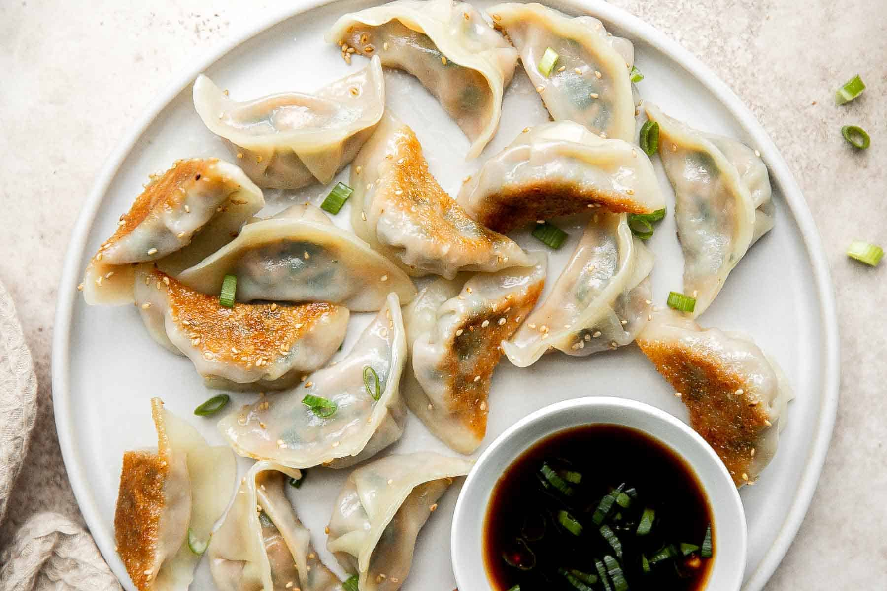

Pork Dumplings

Description
These tasty steamed pork dumplings make a perfect appetizer for a party or you can serve them as a main dish
Serve with hoisin sauce, hot Chinese-style mustard, and toasted sesame seeds.
Ingredients
- Wonton wrappers
- ground pork
- garlic, minced
- onion, sliced
- soy sauce
- sesame oil
- egg, beaten
- chinese cabbage, shredded
Steps
- In a large bowl, combine the pork, ginger, garlic, green onion, soy sauce, sesame oil, egg and cabbage. Stir until well mixed.
- Place 1 heaping teaspoon of pork filling onto each wonton skin. Moisten edges with water and fold edges over to form a triangle shape. Roll edges slightly to seal in filling. Set dumplings aside on a lightly floured surface until ready to cook.
- Arrange dumplings in a covered bamboo or metal steamer so they don't touch to prevent them from sticking together; steam for 15 minutes, or until pork is cooked through.